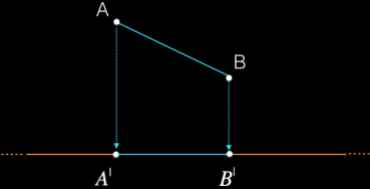
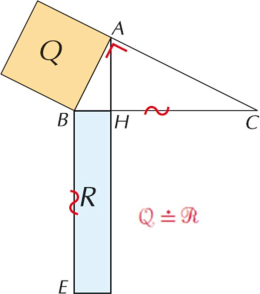
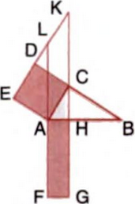
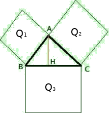
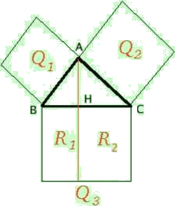

Primo teorema euclide
Definition. Si chiama proiezione ortogonale o proiezione di un segmento su una retta fissata r il segmento della retta r avente per estremi le proiezioni degli estremi del segmento dato.
Primo teorema di Euclide. In un triangolo rettangolo il quadrato costruito su un cateto è equivalente al rettangolo avente per lati l'ipotenusa e la proiezione del cateto stesso sull'ipotenusa.
Proof. Facendo riferimento alla figura,
I prolungamenti di AF ≌ AB e di HG, incontrano il prolungamento di ED rispettivamente in L e in K. Il quadrato ACDE e il parallelogramma ACKL sono equivalenti perché hanno la base AC in comune e l'altezza del quadrato CD è anche altezza del parallelogramma (altezza è qualunque segmnento di perpendicolare compreso fra i due lati paralleli di cui uno sia la base). I triangoli rettangolo ABC e ALE sono congruenti per il 2° criterio, infatti AE ≌ AC, perché lati del quadrato, e EAL ≌ BAC, perché complementari dello stesso angolo. Da cui segue che AL ≌ AB. Per transitività si ricava che AL ≌ AF e dunque il parallelogramma ACKL e il rettangolo AFGH hanno basi congruenti e altezze relative a tali basi congruenti, perché altezze della striscia di lati LF e GK. Per la proprietà transitiva dell'equivalenza tra figure si ha che ACDE = AFGH, cioè la tesi. □
Teorema Pitagora
In ogni triangolo rettangolo la somma dei quadrati costruiti sui cateti è equivalente al quadrato costruito sull'ipotenusa.
Proof. Facendo riferimento alla figura
Prolungando l'altezza AH, il quadrato Q3 viene suddiviso nei rettangoli R1 e R2. Per il primo teorema di Euclide Q1 è equivalente a R1 per il primo teorema di Euclide Q2 è equivalente a R2 quindi Q1 + Q2 equivalente a R1 + R2 = Q3 come volevamo. □